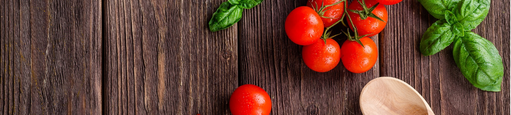
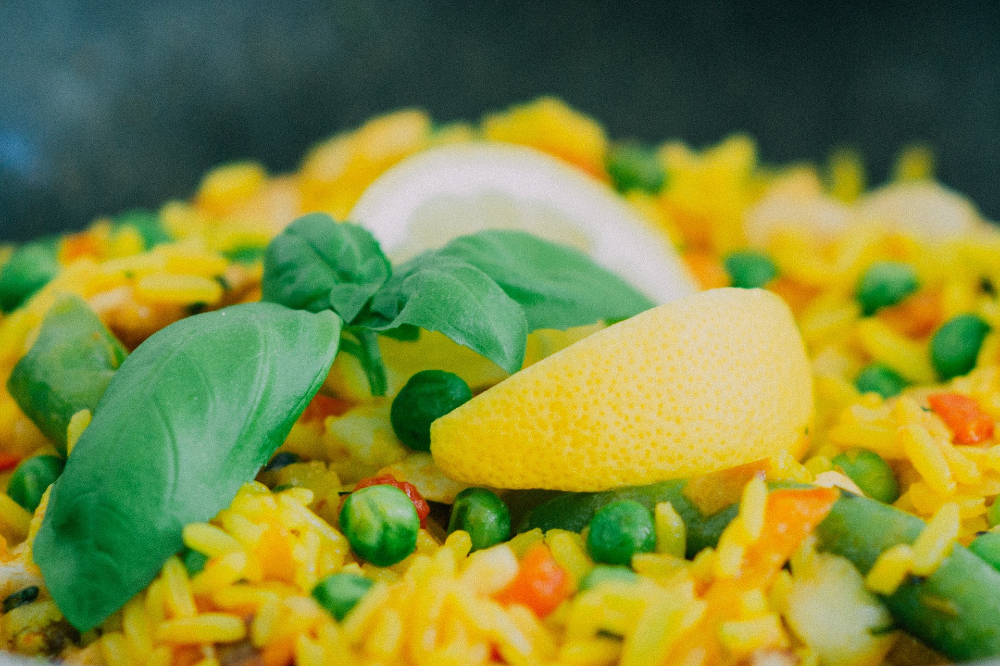
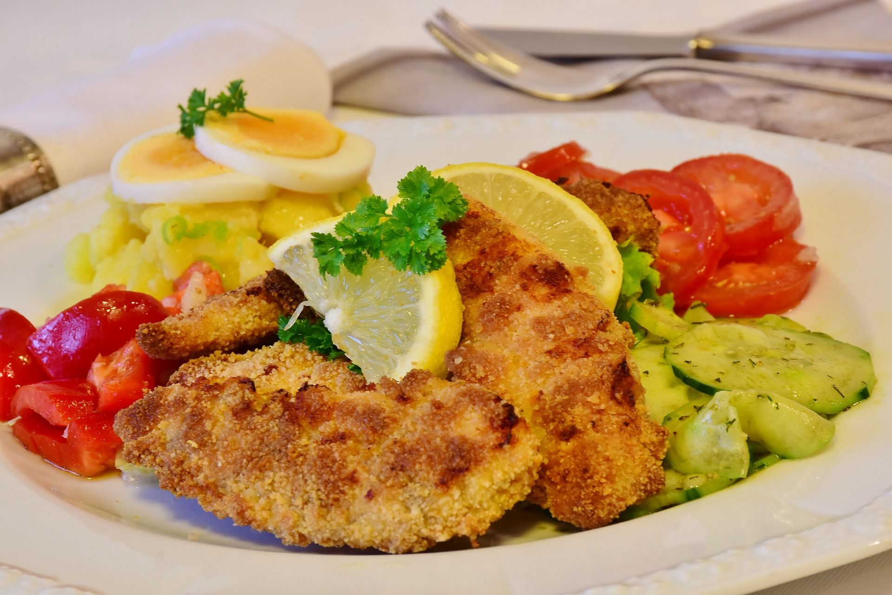
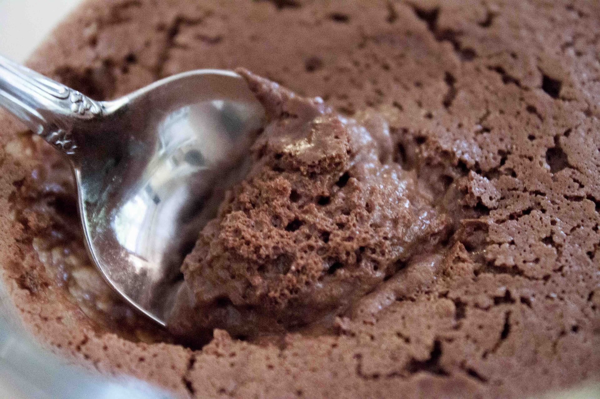

DE
Europäische Gerichte

Spaghetti sind Teigwaren und Nudeln aus Hartweizen,
welche ursprünglich aus Italien stammen. Das Wort be-
deutet so viel wie "Schnürchen". Man kann sie mit fast
allem dazu essen, weshalb sie weltweit populär sind.
Unter anderem gibt es da Spaghetti Bolognese, Spaghetti
Carbonara oder auch Spaghetti alla Napoletana.
https://pixabay.com/de/spaghetti-pasta-lebensmittel-863304/

Paella ist eine Reispfanne, welche traditionell aus Spanien
stammt. Genauer gesagt aus Valencia. Es gibt viele abweichende
Zubereitungen von Paella da Gerichte in Spanien sehr regional
geprägt sind. Es besteht aus Reis, welcher gelb gefärbt wird
durch Safran, Gemüse und Fleisch. Manchmal gibt es auch Schnecken
dazu.
https://pixabay.com/de/paella-reis-erbsen-zitrone-926303/

Wiener Schnitzel ist wie der Name schon verrät
einer Spezialität aus Wien (Österreich). Es wird
Hauptsächlich aus Kalbfleisch gemacht. Der Name
Wiener Schnitzel fiel wahrscheinlich das erste Mal
im 19. Jahrhundert in einem Kochbuch von Maria Anna
Neudecker. Wahrscheinlich stammt das Wiener Schnitzel
ursprünglich aus Oberitalien, wo dieses als dickeres
Kotelett auftrat.
https://pixabay.com/de/schnitzel-h%C3%A4hnchenschnitzel-huhn-3779726/

Mousse au Chocolat ist ein traditionelles Dessert aus
Frankreich, was so viel bedeutet wie "Schokoladenschaum".
Die Zutaten sind Eier, Schokolade, Zucker und Butter.
Es ist unter anderem weltweit bekannt, aufgrund der
einfachen und schnellen Zubereitung und für ein hervor-
ragendes Geschmackserlebnis.
https://pixabay.com/de/mousse-au-chocolat-aquafaba-vegan-2635502/